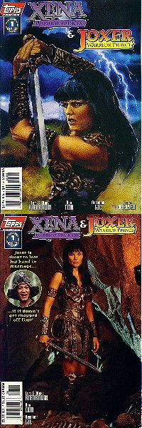
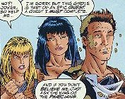
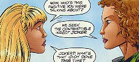
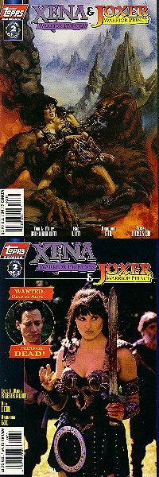
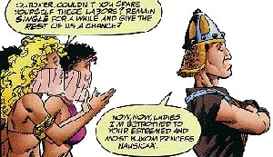
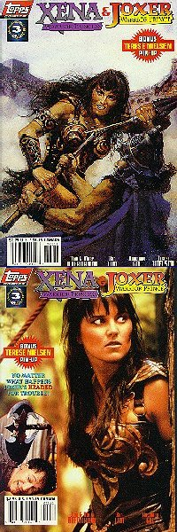

Xena: Warrior Princess/Joxer: Warrior Prince #1 (of 3)
Title: Xena Warrior Princess and Joxer Warrior Prince: Part One of Three
Date: November 1997
Actual Release: November 19, 1997
Pages: 32 (22 pgs story)
Cover Price: $2.95
Writer: Tom and Mary Bierbaum
Pencils: Ron Lim
Inks: Armando Gil
Letters: Ken Lopez
Colors: Digital Chameleon
Editor: Renee Witterstaetter
Painted Cover: Terese Nielsen
Frontispiece: Douglas Smith
Photo Cover: Unknown
NOTE: Xena: Warrior Princess created by Robert Tapert and John Schulian
OVERVIEW:
Xena and Gabrielle come upon a group of Amazons ripping apart a village in search of someone. At Gabrielle's request, they stop. As it turns out, they are looking for Joxer, who stole a girdle from one of them. Gabrielle promises to get the girdle back, peacefully, and the Amazons leave.
And Joxer comes out of hiding. To Gabrielle's surprise, Joxer did steal the girdle. And won't give it back until he's shown it to the King of the Phaecians.
The scary tale comes out when they reach the court, and the beautiful princess Nausicaa immediately grabs poor Joxer and smothers him with kisses. It seems she has fallen in love with him, and the King and Queen have set Joxer to completing seven great labors, in the hopes that they won't have to make him their heir. Stealing a girdle from an Amazon was his first task.

Xena is ready to leave, but Gabrielle convinces her to tag along with Joxer on his next task. In the meantime, Gabby has to return the girdle Joxer stole and then find Aphrodite to try and sort out why the princess is in love with Joxer.
Joxer's next labor is to retrieve one of the nine heads of the savage Hydra. Luckily, Xena rescues him, and gets the head to boot. The King and Queen figure that they've been giving Joxer easy tasks, so his next task is to bring a Siren.
Xena tags along, lucky for Joxer, and blocks up his ears as they near the sirens. She then starts to fight her way through an army of skeletons to reach them. Joxer, however, makes it there first, only to have the sirens pull out his ear plugs, and then send him to kill Xena...
COMMENTS:
The art cover for this issue is really beautiful. I love it.
Joxer is drawn inconsistenly throughout the book. There are very few pictures that really look like the character.

Bringing in the fact that Gabrielle is a Queen of the Amazons was nice, but did we really have to go through four pages of Xena fighting Amazons to get there?
The king of the Phaecians is playing around behind his wife's back, trying to seduce the servant Daphne. I have to wonder how that will tie in with the rest of the story. He begs Xena and Gabrielle not to tell Queen Arete about it, and Xena asks him to cancel the labors.
CONCLUSION:
As light as this story is, it could've done with a back-up of some kind. I liked it, but then, I'm a Joxer fan.
Review Date 20 Nov 1997 by Laura Gjovaag

Xena: Warrior Princess/Joxer: Warrior Prince #2 (of 3)
Title: Xena Warrior Princess and Joxer Warrior Prince: Part Two of Three
Date: December 1997
Actual Release: December 17, 1997
Pages: 32 (22 pgs story)
Cover Price: $2.95
Writer: Tom and Mary Bierbaum
Pencils: Ron Lim
Inks: Armando Gil and Keith Williams
Letters: Ken Lopez
Colors: Digital Chameleon
Editor: Renee Witterstaetter
Painted Cover: Terese Nielsen
Frontispiece: Douglas Smith
Photo Cover: Unknown
NOTE: Xena: Warrior Princess created by Robert Tapert and John Schulian
OVERVIEW:
Xena has been knocked unconscious by the minions of the sirens, who proclaim victory even as they urge Joxer to finish the job. He resists valiantly (mostly due to his fear of Xena), but in the end approaches to kill her. Only to find that she's been waiting for him, only pretending to be knocked out. She knocks Joxer out, then grabs a siren to complete Joxer's task.
On the trip back, Joxer learns that his reputation is spreading. Of course, nobody really believes that he's Joxer.
At Aphrodite's temple, Gabrielle gets a few words with the goddess, who tells her to make a sacrifice if she wants help.
Joxer's next task is to rescue some of Hestia's virgins who had been captured by the brass creature Talus. Xena takes on Talus, Joxer takes on the virgins. It's not all fun and games for Joxer, though, as his reputation turns out to be a problem with some tough guys.
Joxer's next labor is to get a tooth from our old friend Cerberus. With a little help from Orpheus, Xena and Joxer manage to accomplish the task.
Joxer's sixth labor is to rescue the sea nymph Galatea from the cyclops Polyphemus. Joxer quickly offends the giant, who grabs Joxer despite Xena's best efforts, and eats them both...
COMMENTS:

Joxer is still not quite drawn correctly. In some panels he looks a lot like Joxer, in other panels I just don't recognize him. Also, Xena occassionally has the same problem, though for the most part she's recognizable. Aphrodite doesn't look much like the one on the show, but her attitude is exactly right.
The plot doesn't advance much in this issue. It's mostly Joxer and Xena running around and Xena saving Joxer's butt. Sometimes literally.
CONCLUSION:
Not bad. I wouldn't get it unless you got the first issue.
Review Date 29 Jan 1998 by Laura Gjovaag

Xena: Warrior Princess/Joxer: Warrior Prince #3 (of 3)
Title: Xena Warrior Princess and Joxer Warrior Prince: Part Three of Three
Date: January 1998
Actual Release: 4 February 1998
Pages: 32 (22 pgs story) plus pull-out poster
Cover Price: $2.95
Writer: Tom and Mary Bierbaum
Pencils: Ron Lim
Inks: Armando Gil
Letters: Ken Lopez
Colors: Matthew Paine and Digital Chameleon
Editor: Dwight Jon Zimmerman
Painted Cover: Terese Nielsen
Frontispiece: Douglas Smith
Photo Cover: Unknown
NOTE: Xena: Warrior Princess created by Robert Tapert and John Schulian
OVERVIEW:
Joxer and Xena are in Cyclop's mouth, and though Xena thinks there is a chance, Joxer is lamenting the end of his heroics.
Meanwhile, Gabrielle meets Iolaus, who agrees to take her to Hercules, and thus to Aphrodite.
Xena jabs Cyclops in the gums, and Joxer and Xena escape when he screams in pain. Then Xena starts jabbing him on the head, so he hits himself with a club and knocks himself out. Joxer and Xena waste no time saving Galatea, with Joxer taking all the credit. The King decides that Joxer's last task will be defeating Xena in single combat. Xena nearly walks out, but Nausicaa convinces her to stay. The King attempts to convince Daphne to seduce Joxer, but she declines.
Gabrielle succeeds in getting and audience with Aphrodite, who agrees to help after Hercules threatens to tell Zeus that she's been stirring up trouble among mortals.
Xena and Joxer start to battle with staffs. Xena quickly figures out that her staff is coated in poison. She then intercepts two poison darts meant for Joxer. At an order from the King, a wall of the arena is pushed down upon them. Xena pulls Joxer to safety, then confronts the King.
She is joined by Gabrielle and Cupid. Cupid quickly disperses the love spell on Nausicaa, who proceeds to beat up on Joxer. The King then confronts Cupid, who was supposed to put a spell on Daphne. Cupid leaves, but Daphne overheard the conversation and decides to tell the Queen. Joxer gets out with only a black eye and a broken heart.
COMMENTS:
Still uneven in the art department. Gabrielle is virtually unrecognizable in many panels, particularly when she's battling thieves with Iolaus.
The writing is very good and befitting of the humor of the issue. The women are swooning over Joxer until Nausicaa beats him up, then they throw rotten fruit at him. Iolaus and Gabrielle meet and talk while fighting a group of child-thieves. Aphrodite shows off her charms.
CONCLUSION:
Ok story, ok art. I wouldn't get it if you aren't a fan of Joxer.
Review Date 18 June 1998 by Laura Gjovaag